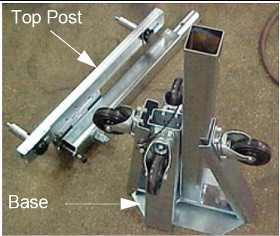
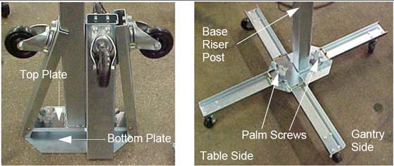

The base uses two (2) palm screws to clamp the four (4) legs in the open (usage) mode.
The base also uses the same palm screws to prevent the legs from falling in storage mode.
The top post can be inserted in either base and is keyed for proper engagement.
The top post locking pin prevents the sections from separating during use.
Illustration 6: Front Cover Dolly in Storage Mode

Illustration 7: Front Cover Dolly Base Assembly
